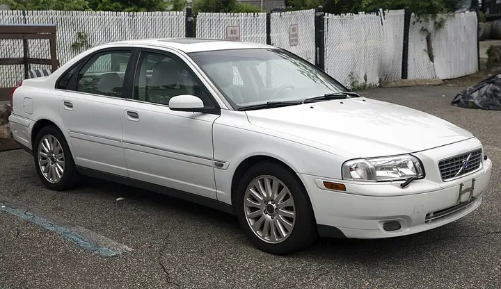

Volvo S80
Second generation (2006–2016) · 2005–2016
Abstract
This generation of the Volvo S80 was built 26 December 2005–2016 (LHD) in Sweden: Torslanda (Torslandaverken), China: Chongqing (CFMA), Malaysia: Shah Alam (SMA). Designed by Todd Levy (2004).


1Specifications
| Production | 26 December 2005–2016 (LHD)October 2006–2016 (RHD) |
|---|---|
| Model years | 2007–2016 |
| Assembly | Sweden: Torslanda (Torslandaverken)China: Chongqing (CFMA)Malaysia: Shah Alam (SMA) |
| Designer | Todd Levy (2004) |
| Platform | Volvo P3 platform |
| Engine | 1.6 L EcoBoost I4 turbo (petrol)2.0 L B4204S3 I4 (petrol)2.0 L B4204S4 I4 (flexifuel)2.0 L B4204T I4 turbo (petrol)2.5 L B5254T I5 turbo (flexifuel)2.5 L B5254T I5 turbo (petrol)3.0 L B6304 I6 turbo (petrol)3.2 L B6324 I6 (petrol)4.4 L B8444S V8 (petrol)1.6 L D4164 I4 (turbodiesel)2.0 L D4204 I4 (turbodiesel)2.0 L D5204 I5 (turbodiesel)2.4 L D5244 I5 (turbodiesel) |
| Transmission | 5-speed Ford MTX75 manual6-speed Volvo M66 manual6-speed Aisin-Warner AWTF-80 SC automatic6-speed Ford PowerShift dual-clutch automatic8-speed Aisin TG-81SC automatic |
| Wheelbase | 2835 mm2975 mm (S80L) |
| Length | 4854 mm4991 mm (S80L) |
| Width | 1861 mm |
| Height | 1490 mm |
| Weight | 1565–1860 kg |
| Related | Volvo V70 IIIVolvo XC60 |
2Versions
- S80
- S80L
- 2010 update (facelift)
- 2013 update (facelift)
- 2014 update (facelift)
- 2015.5
3Previous generations
